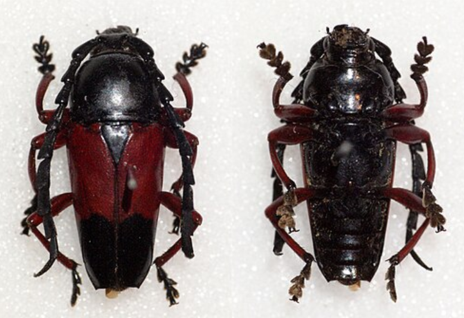

Es un escarabajo longicornio perteneciente a la familia Cerambycidae. Se caracteriza por presentar un cuerpo alargado y antenas notoriamente desarrolladas, características propias de este grupo. Su distribución incluye Panamá, Colombia y Venezuela. En Colombia cuenta con registros en Santander y Valle del Cauca, incluido el municipio de Palmira.